제 1장. 서론
1.1 연구배경 및 연구주제
LINE은 2011년 2월에 출시된 네이버톡이 실패하고, 같은 해 6월에 출시된 LINE 메신저가 대성공을 하면서, 5년만에 2016년 7월 도쿄 증권 거래소와 뉴욕 증권 거래소에 동시 상장을 하면서, 시가 총액 10조를 기록한 회사이다. 현재도 2022년말 기준, 2억명의 Monthly Active User (MAU)를 보유한 슈퍼앱으로 자리매김하고 있다. 국내 법인이 일본에서 출시한 메신저앱의 초기 성장 요인을 분석하고, 그 이후에도 일본의 국내 메신저앱으로 자리잡으면서 우리나라의 카카오톡처럼 일본인의 삶의 곳곳에 스며들어 LINE의 생태계를 이루게 되었고, 일본을 넘어서, 태국과 대만의 국민 메신저에서 슈퍼앱으로까지 성장한 글로벌 생태계 확장 전략에 대해서 분석해보고자 한다. 그에 따라, 아래와 같은 Research Question을 던져보고자 한다. Research Question 1. LINE의 성장요인은?
- 1억 가입자 달성에 소요된 기간은 트위터가 49개월, 페이스북이 54개월 걸린 반면, LINE은 19개월만에 달성하며, 폭발적인 성장을 이루어 냄 - Research Question 2. LINE의 생태계 확장 전략은?
- 핀테크를 중심으로 Service of Scope 확장 및 야후 재팬과 합병으로 플랫폼 흡수
1.2 산업 분석
LINE이 속해 있는 글로벌 모바일 메신저 시장은 [그림1]과 같이 지역별로 강자가 다르게 나타나고 있다. 또한, [그림2]와 같이, 2021년 기준, 33.2억명이 메신저 앱을 사용하고 있고, 연간 유저 추이는 계속 상승 중에 있다.
[그림 1] 나라별 가장 인기있는 메시징 앱 분포
(출처: Business of Apps 홈페이지)
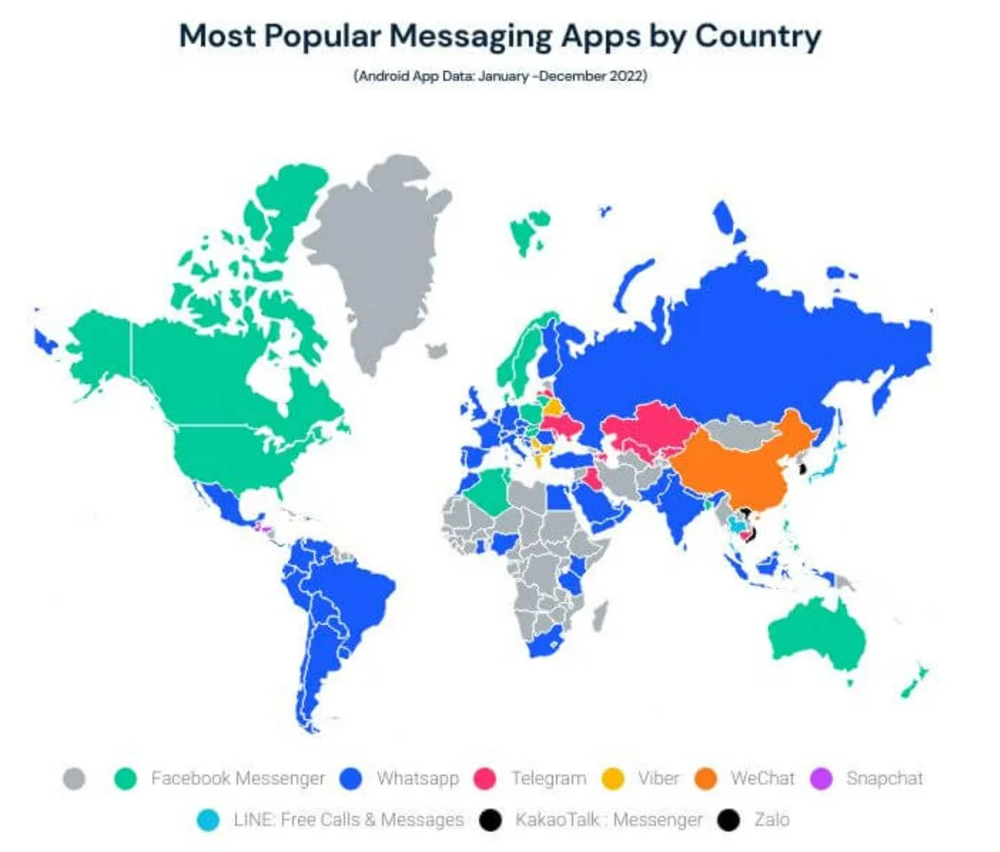
[그림 2] 메시징앱 연간 유저 추이 (단위:10억명)
(출처: 본인 작성, Business of Apps 홈페이지)
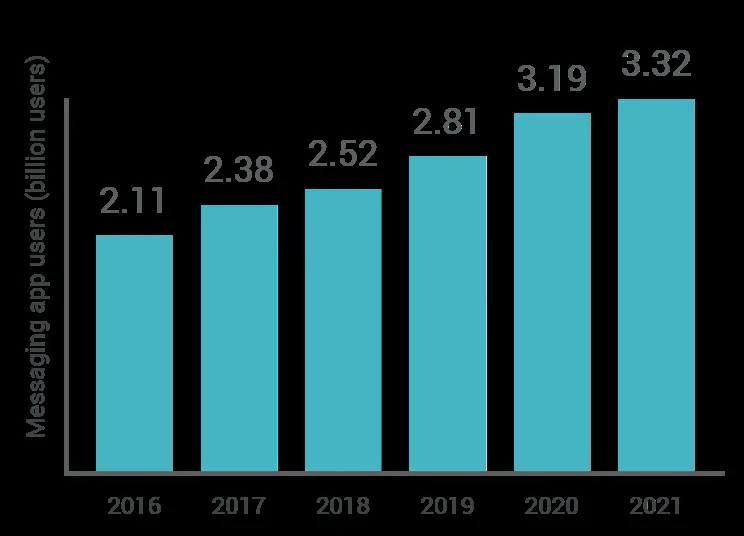
글로벌 메신저 시장에서 가장 큰 MAU를 가진 WhatsApp부터 우리나라의 카카오톡까지 총 9개의 메신저앱을 통해, 메신저 시장이 속한 산업 분석을 아래와 같이 분석하고자 한다.
- WhatsApp 2009년 1월 출시, 24억명 MAU 운영사 및 생태계 확장 여부: 현재는 Meta Platforms Inc.로 2014년 2월 Facebook에 USD 190억에 매각되었고, 메신저앱으로만 기능하고 있음.
주요 사항: 로그인 없이 전화번호로만 등록하고, 데이터 통신을 통해 문자로는 추가 과금 없이 무제한으로 메시지 주고받을 수 있다. 사용자끼리 VoIP (Voice over Internet Protocol)을 통한 무료 음성 통화를 지원하고, “우리가 광고를 팔지 않는 이유”로 추기 1년만 공짜이고, USD 0.99/1년으로 서비스 비용만 받는 유료 정책으로 운영되었으나, 2016년 1월부터 무료로 전환되었다.
- Facebook Messenger 2011년 8월 출시, 21억명 MAU 운영사 및 생태계 확장 여부: Meta Platforms, Inc. – 강제 설치되는 형태이고, 메신저앱으로만 기능하고 있음.
주요 사항: 기성세대로부터 벗어나고 싶은 현상으로 우리나라 10대들은 카카오톡에서 Facebook Messenger로 옮겨 갔으나, 지금은 Instagram DM이나 TikTok이 차지함
- WeChat 2011년 1월 출시, 13억명 MAU 운영사 및 생태계 확장 여부: Tencent Holdings, 메신저앱을 넘어선 확장된 생태계를 구성하고 있음
주요 사항: 2010년 카카오톡에 720억원을 투자해서, 지분 13.3%를 보유한 2대 주주가 되고, 2011년 WeChat 출시함. 다만, 중국 시장에 한정적이며, Tencent의 QQ Mobile과 같이 운영되고 있음.
- Viber 2010년 12월 출시, 8억명 MAU 운영사: 라쿠텐, 2014년 라쿠텐에 매각되었으며, 메신저 앱으로만 남아 있음.
주요 사항: 이스라엘에서 개발된 모바일 메신저로 전화번호로 등록하여 사용 가능함. 암호화된 커뮤니케이션으로 유명하며, 주요 사용 지역은 그리스, 동유럽, 러시아와 중동임.
- Telegram 2013년 8월 출시, 5억명 MAU 운영사: Telegram Messenger LLP, 메신저앱으로만 남아 있음.
주요 사항: 비영리 정책으로 유료기능이나 광고 없었으나, 억만장자에 의해 서버 유지 및 개발비 등 모든 비용 충당하는 것으로 알려졌으나, 2021년 1월부터 Sponsor 광고가 실리는 등 광고 서비스를 시작함. 프리미엄 서비스는 USD 4.99/월로 제공되고 있음.
- SnapChat 2011년 9월 출시, 3.5억명 MAU 운영사: Snap Inc, 메신저앱을 넘어서 카메라 등 기능이 강조되고 있으나, 생태계로 확장된 사례로 볼 수 없음.
주요 사항: 보낸 메시지는 확인 후 최대 10초 안에 사라지는 독특한 시스템으로 유명해졌으며, 미국의 10대와 20대 중심으로 큰 인기를 얻었으나, 텔레그램으로 대거 이탈함. 에반 스피겔의 리더십 개선과 AR 카메라 기술로 세계 AR 광고 시장의 70%를 장악함으로써 현재 다시 반등 중으로 판단됨.
- LINE 2011년 6월 출시, 2억명 MAU 운영사: LINE Corporation이며 생태계 확장된 사례로 봄.
주요 사항: 일본, 대만과 태국 모바일 메신저 시장 점유율 1위 사업자 - Discord 2015년 5월 출시, 1.7억명 MAU 운영사: Discord Inc.이며 메신저앱으로만 존재함
주요 사항: 음성, 채팅, 화상 통화 등을 지원하는 인스턴트 메신저임.
모바일 Multiplayer Online Battle Arena (MOBA) 게임인 Fates Forever를 지원하기 위하여 출시됨. 게임용 메신저의 대명사이며, 커뮤니티 생성을 목적으로 설계됨.
- Kakao Talk 2010년 3월 출시, 5천만명 MAU 운영사: Kakao Corporation, 생태계로 확장된 사례로 봄 주요 사항: 스마트폰의 데이터 통신 기능을 이용하여, 문자 과금 없이 사람들과 메시지를 주고 받을 수 있는 모바일 메신저 앱. 메시징 무과금 원칙과 단체 채팅을 최초로 제공한 점이 폭발적인 성장 원동력임. Social Network Service (SNS), 콜택시, 지도 및 내비, 대리운전, 간편결제 게다가 인터넷 전문은행까지 확산됨.
그 중, 메신저 앱에서 생태계로 확장하는 앱은 먼저 유저를 확보하고, 확보된 유저를 바탕으로 다양한 콘텐츠를 제공하면서, 삶의 전반에 스며드는 서비스를 제공하는 슈퍼앱으로 성장한 3가지 메신저앱을 Phase별로 아래와 같이 분석해보았다.
[표1] 위챗, 카카오톡과 LINE 비교 – Phase 1:유저 확보
(출처: 본인 작성)
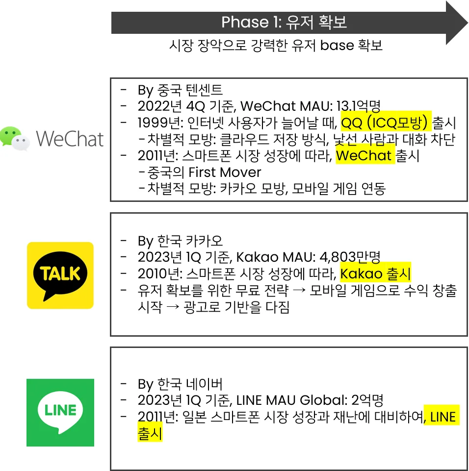
[표2] 위챗, 카카오톡과 LINE 비교 – Phase 2:컨텐츠로 생태계 구축
(출처: 본인 작성)
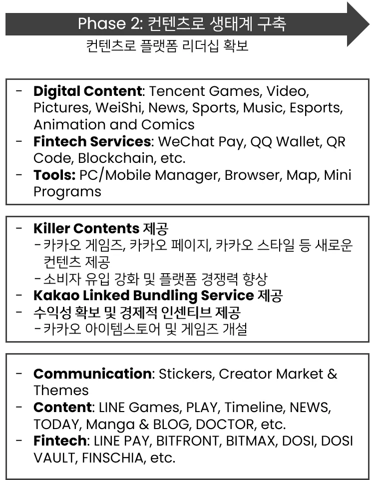
[표3] 위챗, 카카오톡과 LINE 비교 – Phase 3:생태계로 확장
(출처: 본인 작성)
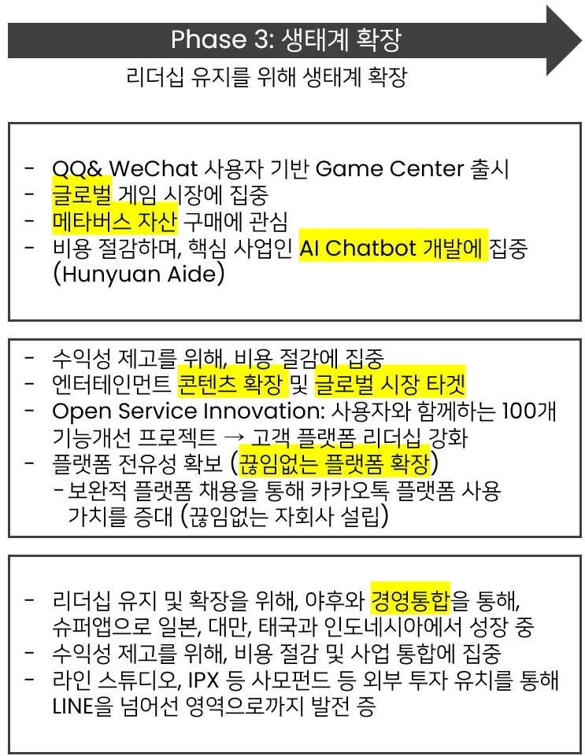
[그림3] Multi-Sided Platforms
(출처: Haigu and Wright (2015))
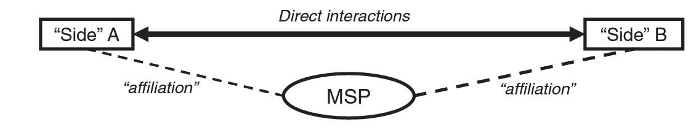
제 2장. 이론적 배경
2.1 플랫폼 이론
플랫폼 이론 중, Network Effects와 Multi-sided Platforms를 중심으로 LINE의 사례를 살펴보고자 한다. LINE은 단면시장에서 확보한 Demand Side User의 직접 네트워크 효과를 기반으로, Supply Side User와 개발자 측면에서 비관련 기능과 보완재를 흡수함으로써, 교차 네트워크 효과를 빠른 속도로 확대한 케이스로 볼 수 있다. Network Effects는 Same-sided Effects와 Cross-sided Network Effects로 나눌 수 있는데, Same-sided Network Effects는 시장의 한쪽 면에 있는 사용자가 같은 쪽 사용자에게 영향을 주면서 생긴 네트워크 효과는 초기의 LINE 메신저 앱에서 발생하였다. Cross-sided Network Effects는 시장의 한쪽 면에 있는 사용자가 다른 쪽에 있는 사용자에게 영향을 끼치면서 생긴 네트워크 효과이다. LINE의 성장기와 확장기에서 메신저 앱에서 여러가지 컨텐츠들이 추가되면서, 생태계가 구성되며, Supply Side User와 개발자까지 Cross-sided 네트워크 효과가 일어났다.
Haigu and Wright (2015)의 Multi-sided Platforms에 따르면, 플랫폼을 매개자의 역할이라는 관점에서 접근하여, “둘 또는 그 이상의 구별된 형태의 연결된 고객 간의 직접적 상호작용을 가능하게 함으로 아래의 3가지가 중요하다고 강조하고 있다.
기술적 우위 선점 (Technological Leadership)
Preemption of assets (리소스 통제)
Buyer Switching Cost
Eisenmann et al. (2011)에 따르면, 플랫폼을 나누는 또 다른 방법이 Transaction Platforms와 Innovation Platforms와 아래와 같이 나눌 수 있다. LINE은 이 두개 중 Transaction Platform에 속할 수 있다고 볼 수 있다.
[그림4] Transactions와 Innovation Platforms
(출처:Eisenmann et al.(2011))
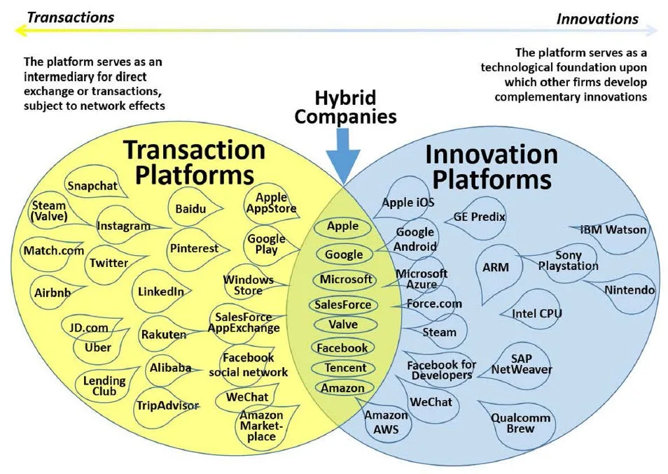
[그림5] First-Mover Advantages
(출처: Liberman & Montgomery (1988))
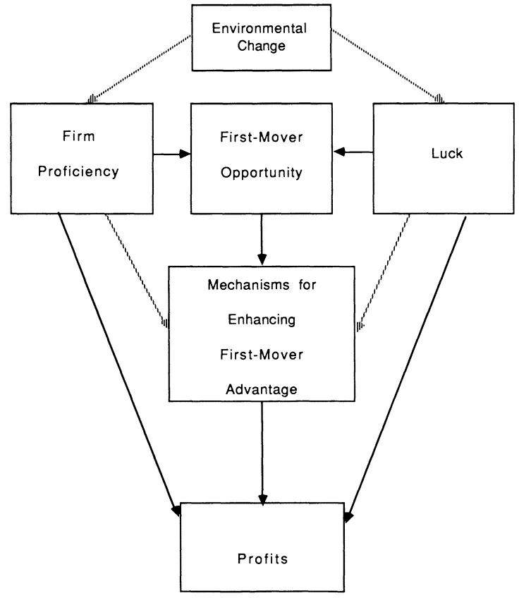
[그림6] Metcalfe’s Law와 Lock-in 전략
(출처: Kaplan & Norton (2013))
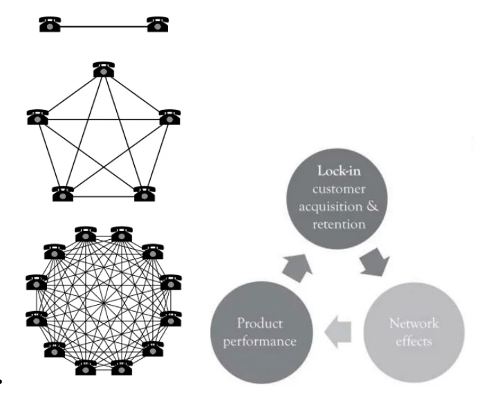
(출처:Eisenmann et al.(2011))
[그림7] Platform Envelopment: User base overlap between attacker and target platforms
(출처: Eisenmann et al. (2011))
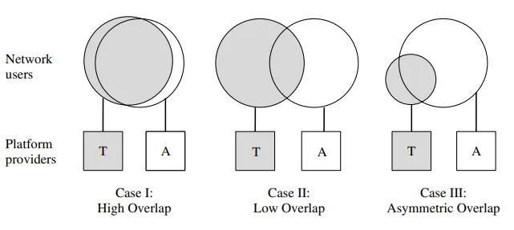
LINE의 메신저앱이 플랫폼으로 정의를 할 수 있다면, 구체적으로 라인의 혁신 과정을 4가지 이론의 관점에서 분석하고자 한다.
1. 최초 진입자 이점 전략
Liberman & Montgomery (1988), First-Mover Advantages
2. Network effect를 통한 Lock-in
플랫폼의 주요한 특성은 앞서 설명한 네트워크 효과이다. 네트워크 효과는 간단히 더 많은 사람들이 이용할수록 그 가치가 증가하는 것임.
Metcalfe’s Law: 3Com의 설립자이자 대부분의 LAN에서 사용되는 이더넷 (네트워킹 기술)을 개발한 메칼프에 따르면, 네트워크의 유용성은 사용자의 수의 제곱에 비례함. 연결의 관점에서 보면, 네트워크의 가치는 연결의 수에 정비례함을 알 수 있음.
Kaplan & Norton (2003), Lock-in Strategies: A Company locks in customers by creating a higher barrier to switching to a competitor
3. Service Concept Innovation
Den Hertdog, Van Der Aa & de Jong (2010), Capabilities for managing service Innovation: towards a conceptual framework The Service Concept or Offering Innovation: 서비스 혁신이란, 개별적으로 그러나 대부분을 결합하여 (1) 기업에 하나 이상의 새로운 또는 갱신된 서비스 기능을 가져오게 하는, (2) 시장에 제공된 서비스/상품을 변환시키는 (3) 서비스 조직의 구조적으로 새로운 기술적, 인적, 그리고 조직적 능력을 요구하는, 새로운 또는 상당히 변화된 서비스 컨셉, 고객 인터페이스 (상호 작용 채널), 서비스 인도 시스템 그리고 기술적 대안
4. Platform Envelopment (플랫폼 흡수)
Eisenmann et al. (2011), Platform Envelopment: 경쟁 심화로 인해 축적된 플랫폼 기능과 장점을 활용하면서, 다른 플랫폼을 흡수하면서 확장
제 3장. LINE 사례 연구
3.1 LINE 개요
LINE은 2022년말 기준, 2억명의 MAU를 보유하고 있으며, 일본, 대만, 태국과 인도네시아 유저를 중심으로 삶의 전반에 스며들어 있는 플랫폼이다.
[그림8] LINE App
(출처: 본인 작성, LINE 공식 홈페이지)
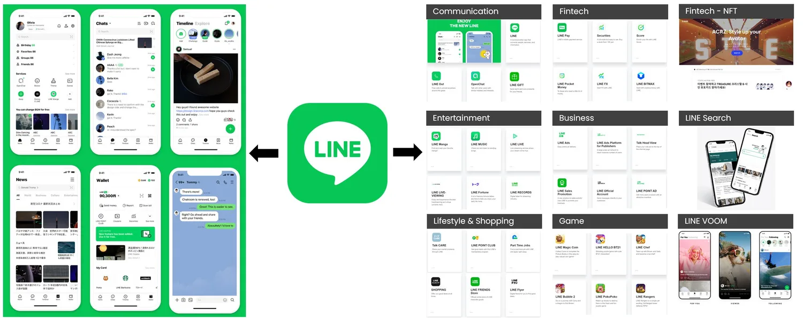
[그림9] LINE의 연혁과 발전 과정
(출처: 본인 작성, LINE 공식 홈페이지, 뉴스, Earnings Release)
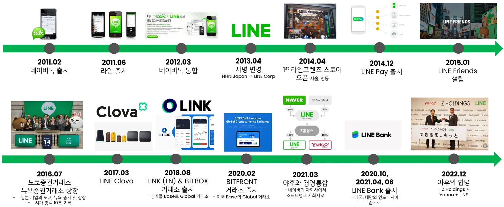
3.1.1 연혁과 발전 과정
2011.02: NHN Japan은 네이버톡을 출시함. 네이버톡은 웹, PC, 모바일을 연동해 언제 어디서나 끊임없이 대화를 나눌 수 있는 서비스로 카카오톡을 견제하기 위해 출시된 서비스. 블로그 이웃, 미투데이 친구 및 폰 주소록에 있는 친구들과 자유로이 대화할 수 있으며 네이버 N드라이브와 연결해 파일을 주고 받을 수 있는 것이 특징임. 또한, 간단한 메모 저장, 미투데이 쓰기, 지인들의 소식확인 또한 가능하며 스마트폰 뿐 아니라 일반 폰으로도 사용 가능함.
2011.06: 라인을 출시하고, 2011년 8월 동일본 대지진 당시 끊기지 않는 커뮤니케이션 수단으로 폭발적인 성장을 시작함.
2012.03: 네이버톡 라인으로 통합. 2012년 3월 6일부로 네이버톡이 네이버 라인으로 통합 업그레이드 되었다고 유저에게 공지함.
2013.04: NHN Japan에서 LINE Corp으로 사명 변경.
2014.04: 첫번째 라인프렌즈 스토어를 서울과 명동에 오픈함.
2014.12: LINE Pay 출시 2015.01: 라인프렌즈 설립 2016.07: 도쿄 증권 거래소 및 뉴욕 증권 거래소 동시 상장. 일본 기업의 도쿄 및 뉴욕 증시 첫 상장하고, 시가 총액 10조를 기록함.
2017.03: LINE Clova 출시 2018.08: LINK (LN) 암호화폐 발행하고, BITBOX 거래소 설립. 싱가폴 Base로 Global 암호화폐 거래소 설립함.
2020.02: 미국 Base로 Global 암호화폐 거래소인 BITFRONT 설립하면서 BITBOX에서 이전.
2021.03: 야후화 경영통합. 네이버의 자회사에서 소프트뱅크 자회사로.
2020.10, 2021.04와 2021.06: 태국, 대만과 인도네시아 순서로 LINE Bank 출시함.
2022.12: 야후와 합병. Z Holdings, Yahoo와 LINE이 LY Corporation으로 거듭날 예정으로 현재 합병을 선언하고, 합병에 필요한 절차를 밟고 있음.
[그림10] LINE: 성장 구간별 분석
(출처: 본인 작성, LINE 공식 홈페이지, 재무제표, Earnings Release)
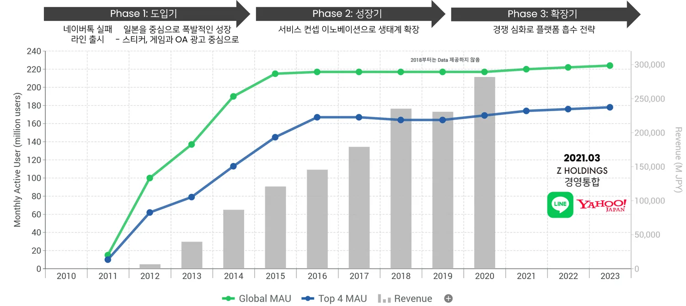
3.1.2 MAU
Global MAU: 198백만 MAU (일본 95M, 대만 22M, TH 54M, ID 6M 그리고 나머지 21M)
[그림11] LINE MAU
(출처: 본인 작성, LINE 20-F, 공식 홈페이지, 뉴스)
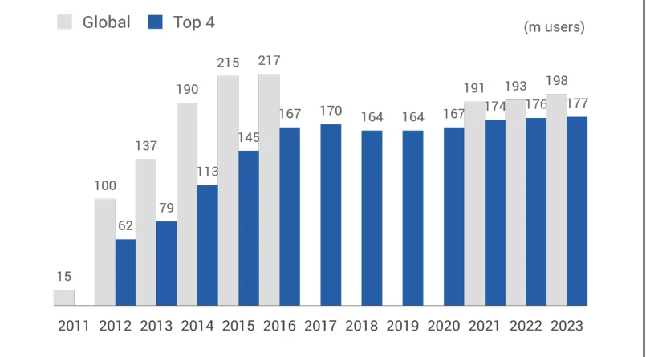
[표4] LINE MAU
(출처: 본인 작성, LINE 20-F, 공식 홈페이지, 뉴스)
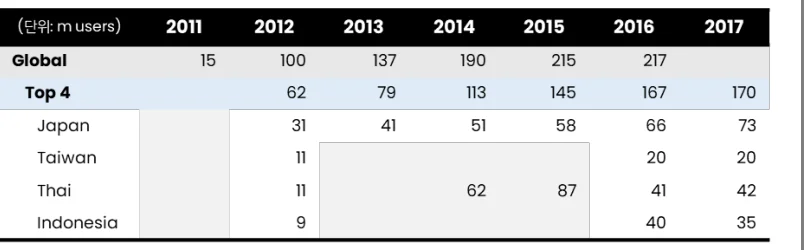
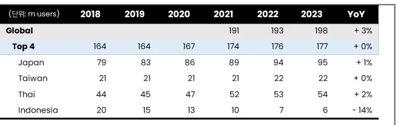
3.1.3 재무 분석
메신저 앱으로 폭발적인 성장을 하다가, 점차 컨텐츠, 광고와 전략 사업 등으로 확장하는 LINE의 재무적 수치 성장 graph와 표로 아래와 같이 정리해보았다.
[그림12] LINE의 경영통합 전 재무 수치
(출처: 본인 작성, LINE 20-F, Earnings Release)
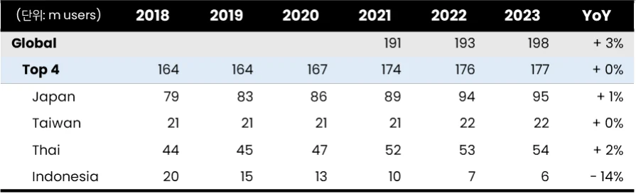
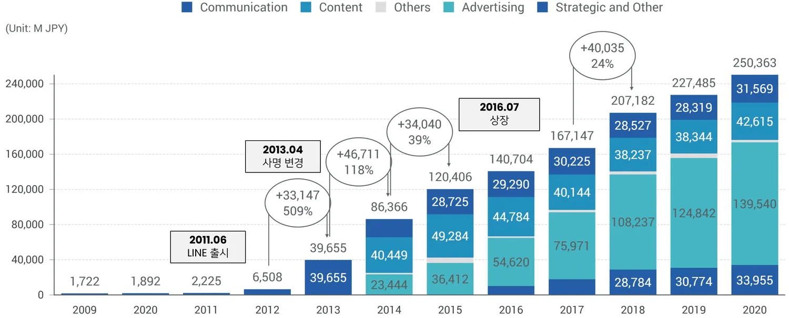
[표5] LINE의 경영통합 전 재무 수치
(출처: 본인 작성, 20-F, Earnings Release)
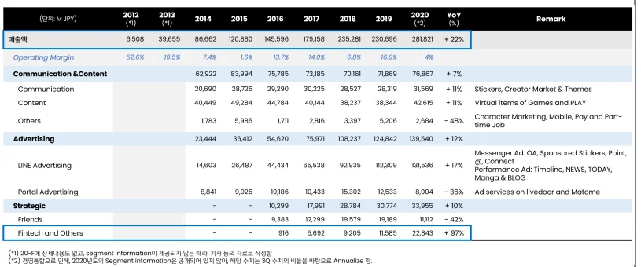
[그림13] LINE의 경영통합 후 재무 수치
(출처: 본인 작성, Z Holdings 공식 홈페이지, Earnings Release)
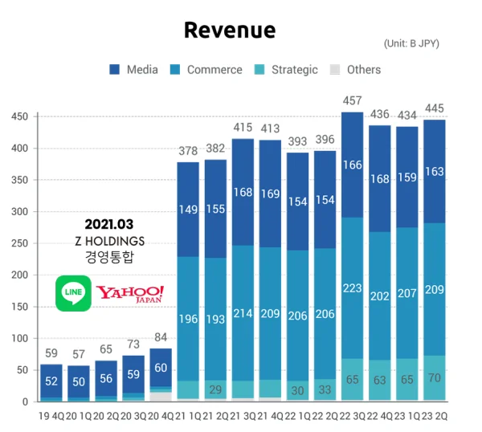
[표6] LINE의 경영통합 후 재무 수치
(출처: 본인 작성, Z Holdings Income Trend (IFRS))
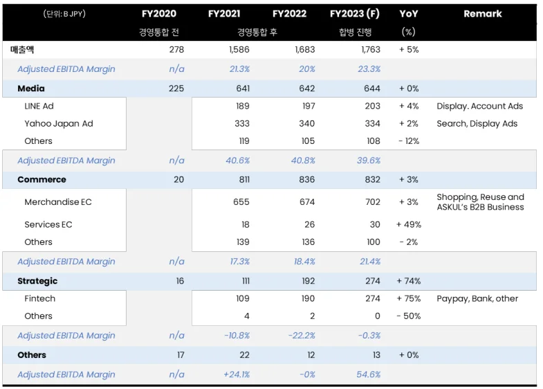
3.2 Phase 1: 도입기
First Mover Advantage 이미 두번 실패한 네이버의 일본 시장 도전기: 10년의 실패 - 2000.11: 네이버재팬 설립 한국에서 한게임커뮤니케이션을 인수한 직후인 2000년 9월 일본 시장에 처음 진출하여, 한게임 재팬을 설립하고, 2개월 후에는 검색 사업을 목적으로 네이버재팬 설립 함.
- 2001.04: 네이버재팬 사이트 오픈 2000년대 초반 한국 IT 기업들의 일본 진출이 붐이었을 때, 네이버도 한국에서 성공한 검색 사업을 일본 시장에 전개할 목적이었음. 일본에서의 검색 사업은 야후의 아성을 무너트릴 수가 없었을 뿐만 아니라, 구글조차 이길 수 없었음.
- 2005.08: 검색 서비스 중단 다행히, 게임 사업은 순조로워서 네이버의 일본 기반은 유지할 수 있었음. 이 기반을 활용하여 한국에서 성공한 지식인을 일본에서 적용하는 검색 사업에 재도전 함.
- 2006.06: 국내 검색엔진 업체인 ‘첫눈’ 인수하고, 기술의 핵심 인력을 일본으로 보냄 - 2009.06: 네이버재팬 Beta 출시 (네이버마토메-지식인)
- 2011.02: NHN에서 네이버톡 출시 데스크톱, 모바일, 웹 연동 – 가입자 기반으로 로그인을 통해 카페, 미투데이, 블로그 등 네이버의 기존 서비스와 다양한 연동을 지원 – 이용자 확장 제한적 - 2011.06: 라인 출시 외국기업이 현지에 적응하는 로컬라이제이션을 넘어서 컬쳐라이제이션으로 문화에 깊이 침투함.
2011.03 동일본 대지진을 통해, 모바일 메신저로 방향성 변경하였고, 네이버톡의 복잡한 기능을 모두 제거함. 모바일에 특화시켜서, 실시간 메시지 주고 받기, 그룹 채팅 등 철저히 의사소통에만 초점을 맞춤 스마트톤 보급 시기와 First Mover Advantage 아직 한국의 카카오톡과 미국의 Whasapp이 일본에 상륙하지 않았던, 별다른 경쟁자가 없던 시기에 재빨리 시장에 진입하였다. 또한, 스마트폴 보급 시기가 2011년 9%에서 2016년 84%까지 성장하던 시기와 맞물려 폭발적인 성장을 이루었다.
[그림14] Smartphone penetration and leading social medial apps in Japan
(출처: Communications and Information Network Association of Japan (CIAJ))
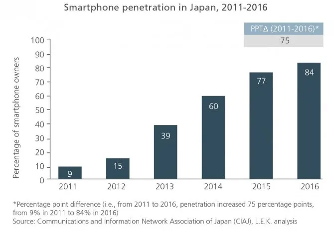
[그림15] Cumulative downloads of all LINE applications
(출처: LINE 공식 홈페이지)
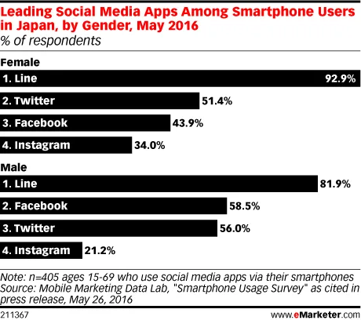
Free Call (VoIP)
VoIP는 Voice over IP로 Voice & Multimedia Communication over IP Network를 의미한다. 라인 메신저를 쓰지 않는 사람과도 통화할 수 있는 서비스를 2011년 10월 4일 출시한 LINE 1.3.0 version부터 사용할 수 있게 하였다. 이 때부터, 유저수가 폭발적으로 성장하기 시작하였고, 이때 소개된 2가지 주요 feature가 Free Call 외에 Sticker도 있었다. LINE은 현재의 주요 경쟁사 대비하여 VoIP를 가장 처음으로 출시함에 따라, 기술적인 우위를 보여주고 있다.
[표7] Voice call launch by apps
(출처: 각 사의 공식 홈페이지)
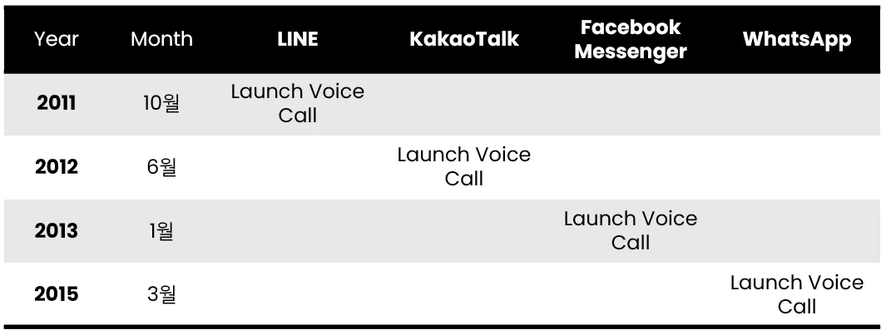
[그림16] LINE의 Voice Call 출시 당시 App 화면
(출처: ZDNet 홈페이지)
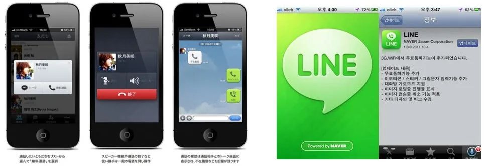
- COVID-19 이후로 VoIP 수요가 급증하면서, 짧은 시간동안 많은 기능/기술 개발 - PC 환경에서의 품질 최적화 (Zoom Meeting보다 좋은 통화 품질)
- URL로 연결 가능한 LINE Meeting 서비스 출시 - 일본과 태국의 사회적 거리두기로 인한 트래픽 폭증 대응 Stickers Sticker 사업은 비언어 메시지 전달을 가능하게 함으로써 큰 방향을 유저들에게 불러일으켰다. 또한, Creators Market을 통해 유저가 직접 스티커를 판매하는 Supplier가 되기도 하고, 또한 Supplier가 되기 위해 User가 되어야 하는 전략을 펼침으로써, 신규 유저 확보에도 스티커 사업이 큰 기반이 되었다. 라인 크리에이터스 마켓은 2014년 5월에 출시하였고, 전세계 라인 이용자가 직접 스티커를 만들어 판매할 수 있는 모바일 플랫폼이다. 라인의 심사 절차를 거친 스티커는 LINE STORE를 통해 판매할 수 있으며, 판매금액의 50%는 창작자의 몫으로 돌아갔다. 콘텐츠 제작자와의 상생을 이루었고, 관련 매출이 출시 1달만에 17억원에 달하는 성공적인 사업이었다. 또한, 라인 스티커 메이커라는 Tool을 제공함으로써, 해당 Tool을 사용하면, 판매수익을 고객과 나눔으로써, Tool을 통한 제작과 마켓, 스토어에서 수익 분배가 가능하게끔 설계되었다.
[그림17] LINE Creators Market
(출처: LINE Creators Market 공식 홈페이지)
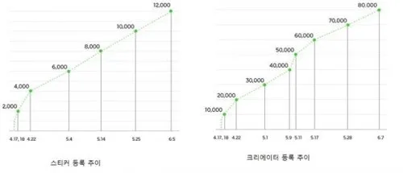
Service Concept 이노베이션을 통해, 유저의 Text 중심 커뮤니케이션에서 스티커 중심 커뮤니케이션으로 축을 변화시키기도 하였다. 스마트폰 내에 소비자들의 개성을 찾을 수 있는 수단으로 기능을 하게 되면서, 더욱 발전하게 되었다. 또한, 표정에서 나타나는 메시지가 언어로 전달되는 메시지보다 더 강력하고, 많은 의미를 함축하고 있어, 유저들의 사용성이 더 확대되는 계기가 되었다. 라인 스티커의 차별성은 각 나라의 상황에 맞는 맞춤형 이모티콘을 제작하여 컬쳐라이제이션 또는 Hyperlocalization을 잘 보여주었다. 라인 스티커에서 브랜드로 확장 기반을 마련하기도 하였다. 캐릭터를 또 상품화하는 케이스도 많이 보였다.
[그림18] Text에서 Sticker Communication으로
(출처: 모바일 메신저 이모티콘을 통한 커뮤니케이션에 관한 연구)
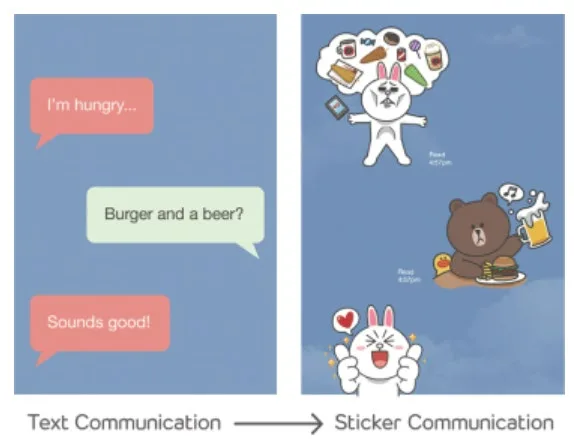
3.3 Phase 2: 성장기
메시징 앱을 넘어서 생태계 구축 메시징 앱, 광고, 콘텐츠, 커머스, 핀테크 및 AI/Healthcare까지 포함한 앱으로 거듭나게 되었다. 라인의 In-app service는 아래와 같이 서비스가 되었고, 라인의 비즈니스도 아래와 같이 확장되어 고객에게 제공되었다.
[그림19] 일본 LINE App 구성
(출처: LINE 및 Z Holdings 공식 홈페이지)
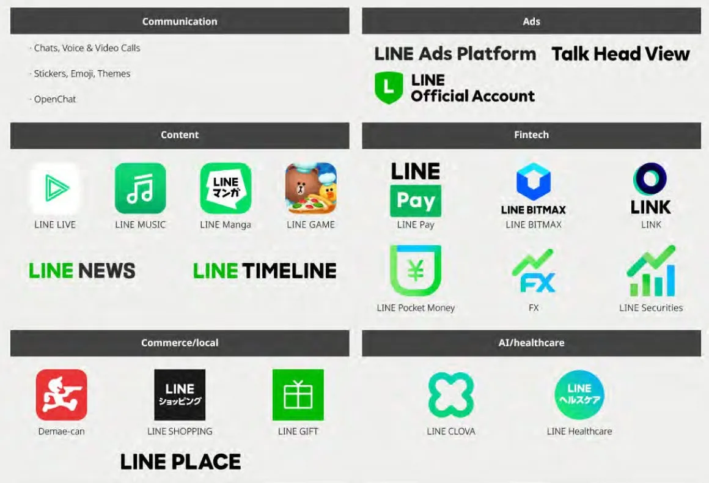
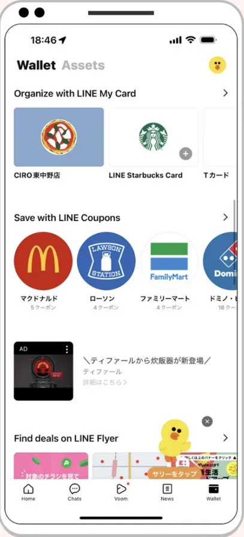
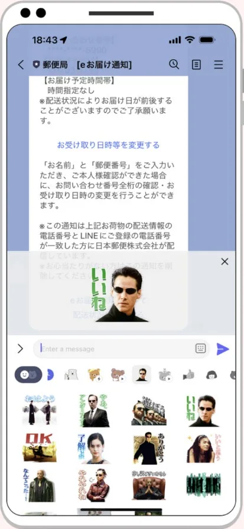
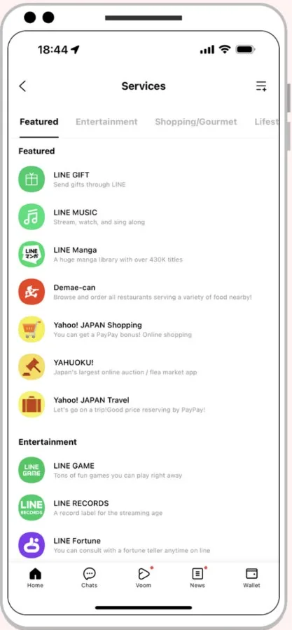
Hyperlocalization 유저가 일본, 태국과 대만의 라인 메신저를 켰을 때, 모두 다른 UX와 UI를 경험할 수 있다. 바로 Hyperlocalization이 라인이 카카오톡이나 텐센트가 국내를 넘어선 성공을 하지 못한 가장 큰 이유라고 생각한다.
Hyperlocalization이란 표준화된 마케팅 접근법과 국가의 시장 특성에 기반한 지역화르 넘어서는 접근법 (Singh and Keating, 2018)으로 Hyper-localization은 국가 또는 지역 내에서 독특한 지역 특정 소비자 Segment나 sub-culture를 식별하고 이해하며, 타겟팅하고, 그런 다음 제품/서비스, Communication, 비즈니스 모델을 지역화하여 Hyer-local 요구와 소비자 수요를 충족시키는 맞춤형 솔루션을 제공하는 것을 목표로 한다. 또한, 지역 특정 비즈니스 문제에 대한 독특한 해결책을 찾고, 그런 다음 지역적으로 가치를 제공하는 것을 포함한다. E-commerce에서는 디지털 콘텐츠를 단순히 번역하는 것을 넘어서 콘텐츠/제품/서비스의 내용과 스타일을 해당 시장의 지역 특정 요구에 맞게 적응시키는 것을 의미하며, 이는 지정학적, 문화적, 사회적, 경제적, 기술적 및 기타 비즈니스 문제에 대한 적절한 고려를 포함한다. 이에 대한 예시로 Uber는 앱 아이콘을 재디자인하여 운영 중인 국가와 지역의 문화와 스타일을 반영하는 Hyper-localization 접근법을 채택하였다. 이는 국가뿐만 아니라 전 세계 수백 개의 사이트에 대한 독특한 디자인을 만들기 위함이었다. Uber의 멕시코 앱 디장니은 멕시코의 핑크색과 현지 타일의 패턴에서 영감을 받았으며, 아일랜드의 경우는 Georgian 건축과 초록색에서 영감을 받은 디자인이다. 그리고, Uber가 중국에서 사용하는 앱 아이콘은 빨간색을 도입하였고, 인도에서는 청록색을 사용하였다. 또 다른 예는 Google India가 힌디어 (인도의 국가 언어)로만 지역화하는 것이 아니라 여러 지역 언어로도 지역화하는 방식이다. 신경망 기계 번역을 통하여, Google 번역 기술은 이제 영어와 뱅골어, 마라티어, 타밀어, 텔루구어, 구자라트어, 펀자브어, 말라얄람어, 칸나다어 등 여러 인도 지역 언어 간에 번역할 수 있다. 또한, Shopee는 2015년부터 시장에 진입하여 7개 다른 국가에 런칭되었는데, 새로운 문화, 모국어, 그리고 다른 기술 진보를 통해 확장 가능한 시장에 성장하고 침투하고 있다. 라인도 해외 시장에서 성공할 수 있던 주요 성장 요인으로 Hyper-localization으로 꼽을 수 있다.
[그림20] Hyper-localized LINE Services
(출처: LINE 공식 홈페이지)
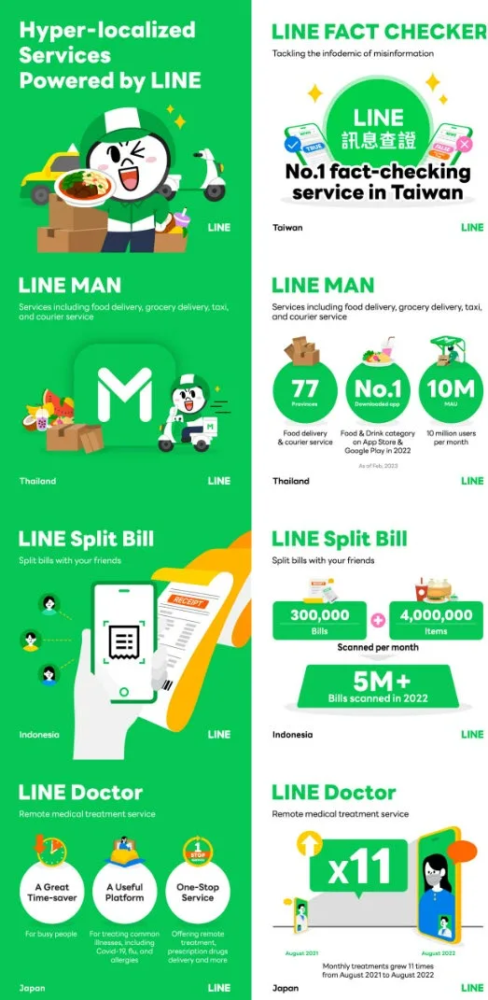
라인이 주로 대만과 태국에서 해외 사업을 크게 발전시킬 수 이유 중 하나는 감정이 간접적이거나 모호하게 표현되는 아시아 지역의 독특한 커뮤니케이션 문화다. LINE 앱은 스티커의 범위를 풍부하게 만드는 데 노력을 기울이며, 이러한 스티커들을 통해 사용자들은 텍스트로 표현하기 어려운 감정과 감정을 자주 전달한다. LINE의 특성은 비언어적 커뮤니케이션을 선호하는 아시아의 커뮤니케이션 문화와 잘 맞았다. 또 다른 요인은 커뮤니케이션 서비스에 의해 생성된 "네트워킹 효과"이다. 이름에서 알 수 있듯이 "커뮤니케이션 서비스"는 사람들을 연결하며, 연결할 사람이 없으면 서비스는 존재하지 않는다. 서비스가 특정 장소에서 인기를 얻으면 주변 지역으로 확산되고, 친구들 사이의 연결이 늘어나면서 더 많은 새로운 사용자를 네트워크에 끌어들이는 좋은 순환을 만든다. LINE은 이 과정을 철저히 조사하고 적절한 시기에 대규모 마케팅 활동을 실시하여 추가 사용자를 획득하고 활동을 증가시켰으며, 이로 인해 "네트워킹 효과"가 강화되어 각 시장에서 사용자 기반을 확대하였다. 이러한 효과의 생성은 LINE 앱에만 특유한 것은 아니지만, LINE의 세밀한 관찰과 적절한 마케팅 조치의 시행은 시장 점유율의 증가를 이끌었다.
이러한 활동들은 LINE의 "Hyper-localization 전략"을 형성하였으며, 이는 다른 커뮤니케이션 앱과는 다른 전략으로, LINE 앱이 급격한 도약을 이룰 수 있게 하였다. "Hyper-localization"은 국제적으로 표준화된 글로벌 서비스를 추구하는 것이 아니라, 목표 지역의 다양한 문화와 관습을 존중하는 철저한 지역화 과정을 추구한다. 이는 세계적으로 동일한 표준화된 서비스를 제공하는 글로벌 대기업과 대비되는 철학이다. LINE의 스티커는 이 개념을 잘 보여주는 좋은 예시이다. 스티커는 현지 문화에 맞게 출시되는데, 예를 들어 대만의 음력 새해와 관련된 스티커, 태국의 불교 문화와 관련된 스티커 등이다. 또한, LINE의 현지 자회사의 대표는 현지에서 선정하여 운영하고 있다.
특히, 대만에서는 사용자 당 스티커 세트가 1년에 18개로, 일본에서의 양의 약 2배이다. 현지의 LINE Sticker Creator의 누적 수는 770,000명을 초과하고, 만들어진 스티커 세트의 수는 9백만에에 이른다. 스티커 제작을 더욱 활성화하기 위해, 창의적 교육 프로그램과 스티커 제작 경연대회가 열렸고, 2014년에 출시된 LINE Pay 서비스가 모든 모바일 송금/결제서비스에서도 1위를 차지하는 등 커뮤니케이션 수단을 넘어서 다양한 서비스가 결합되어 대만 인구의 약 90%가 LINE을 사용하며, LINE이 배포된 모든 지역 중에서 가장 LINE이 널리 퍼진 시장이다. 대만에서는 통신, 디지털 마케팅 솔루션, Entertainment & 콘텐츠, Commerce, OMO (Online Merged Offline)과 핀테크의 6개의 핵심 사업을 중심으로 그 플랫폼에서 강력한 생태계를 구축하고 있다.
[그림21] LINE 대만앱의 주요 Hyper-localized 서비스
(출처: Z Holdings 공식 홈페이지)
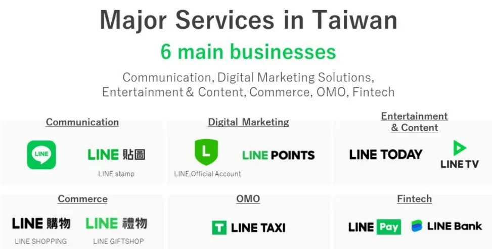
[그림22] LINE 대만앱의 LINE Fact Checker
(출처: Z Holdings 공식 홈페이지)
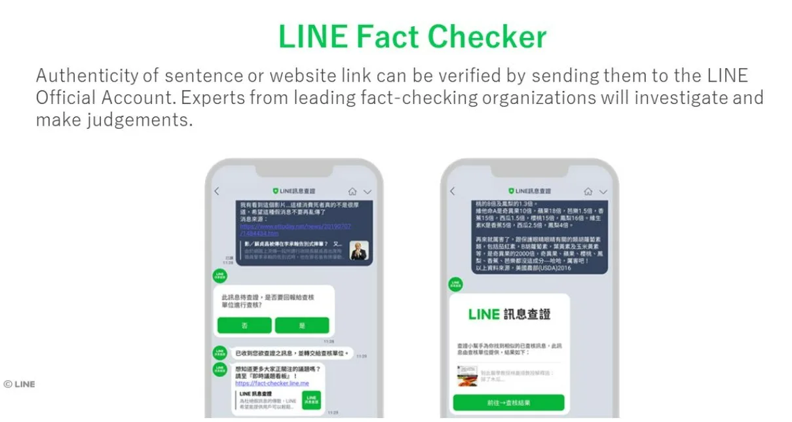
특히, 2019년 7월에 출시된 LINE Fact Checker는 성공적인 Hyper-localization의 예시가 될 수 있다. 회사의 CSR 노력의 일부를 보여주는 독특한 서비스이다. 대만에서는 가짜 뉴스의 확산이 심각한 사회 문제가 되었다. 2022년 3월 스웨덴의 V-Dem 연구소가 발표한 연구 결과에 따르면, 2021년까지 대만은 외국 정부가 거짓 정보를 확산하는 대상이 된 지역으로 9년 연속으로 기록되었다. LINE Fact Checker는 이러한 거짓 정보의 확산을 제한하기 위해 출시되었고, LINE Fact Checker를 통해 문장이나 웹사이트 링크의 진위 여부는 LINE 공식 계정으로 보내서 확인할 수 있다. 주요 팩트 체킹 기관의 전문가들이 조사하고 판단을 내릴 것이다. 2021년 말까지 서비스는 55만명 이상의 사용자를 얻었고, 총 26,878개의 메시지가 팩트 체크되었으며, 그 중 82%는 가짜였고, 14%는 부분적으로 정확했으며, 단지 4%만이 정확했다. 사용자에게 정확한 정보를 제공하기 위해, LINE의 뉴스 서비스인 LINE TODAY 내에 팩트 체킹 카테고리가 추가로 도입되었다.
[그림23] LINE 태국앱의 주요 Hyper-localized 서비스
(출처: Z Holdings 공식 홈페이지)
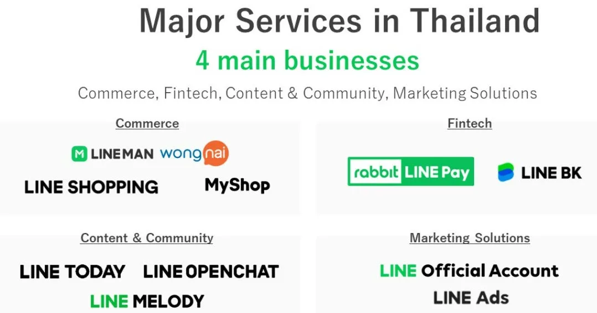
태국에서는 인구의 약 80%가 LINE 사용자이며, Commerce, 핀테크, 콘텐츠 & Community, 마케팅 솔루션 등이 주요 사업이다. 이 중에서 가장 활발한 사업 중 하나는 LINE MAN Wongnai이다. LINE MAN Wongnai의 기반이 되는 것은 2016년 4월에 출시된 LINE MAN으로, 식품 배달, 식료품/생활 필수품 배달, 특급 우편, 택시 호출 서비스를 운영하고 있다. 교통 체증이 잦은 태국에서 on-demand assistant 앱인 LINE MAN은 일상적인 문제를 해결하여 사용자들의 일상 생활을 지원하고 있다. 2020년 9월에는 LINE MAN이 레스토랑 검색 플랫폼인 Wongani와 하병하였고, 태국 인구의 약 80%가 사용하는 LINE과의 시너지를 통해 2020년 1월부터 8월까지 월간 주문수가 15배 이상 증가하고, WOngnai의 레스토랑 검색 및 리뷰 서비스는 100만개의 상인을 커버하며, 그들의 POS 솔루션은 50,000개 이상의 상인이 사용하는 레스토랑 산업에서 1위 시스템이다. 2022년 9월에는 LINE MAN Wongnai가 시리즈 B펀딩에서 2억 6,500만불이 유치되었고, 기업 가치는 10억불을 초과하였다. 또한, 태국의 Bangkok Mass Transit System (BTS)에서 사용할 수 있는 Rabbit Card를 기반으로 성장해온 Rabbit 그룹과 라인페이 태국은 2016년 5월 얼라이언스 협약을 체결하여, 태국의 “현금 없는 사회” 혁신을 통해 Rabbit LINE Pay로 라인페이 태국의 사명을 변경하였다. BTS를 매일 이용하는 태국인의 Rabbit LINE Pay의 사용률 2위 사업자보다 5배 많다. 이렇게, 태국에서도 교통체증이 찾은 태국의 현지의 니즈를 파악하여 LINE MAN Wongani와 Rabbit LINE Pay를 바탕으로 성장하고 있다. Hyperlocalization 경쟁사분석
IPO로 자본 마련 라인 주식회사 (LINE Corporation)는 2016년 6월 10일 증시 상장을 공식 발표함으로써, 2016년 7월 15일 (뉴욕 7월 14일) 일본의 동경 거래소 (Tokyo Stock Exchange)와 미국의 뉴욕 증권 거래소 (New York Stock Exchange) 동시 기업 공개 (Initial Public Offering, IPO)를 하였다. 동시 상장을 통해, 3,500만 주의 주식 중 1,200만주가 배정된 일본 시장에서는 주당 JPY 3,300의 가격으로 2,200만주가 배정된 미국 시장은 주당 USD 32.84의 가격으로 약 1조 3천억원 (11억 5천억 달러) 규모의 자금을 조달하였다. 해당 규모는 2016년 미국에서 발생한 IPO 중 가장 큰 규모였다. 그 중, Tech Sector에서는 2014년에 있었던 알리바바의 IPO 이후 가장 큰 규모였다. 국내 관점에서는 2011년 6월 서비스를 시작한 지 약 5년만에 얻은 성과인 동시에, 네이버는 해외에 설립한 자회사를 본사와 별개의 독자적인 서비스 플랫폼과 비즈니스 모델을 갖춘 규모로 키워 주요 증시 두 곳에 동시 상장시킨 국내 최초 기업으로 성장하였다.
[그림24] Hyperlocalization 경쟁사 분석
(출처: 본인 작성, 카카오 공식 홈페이지, 위챗 공식 홈페이지 및 뉴스)
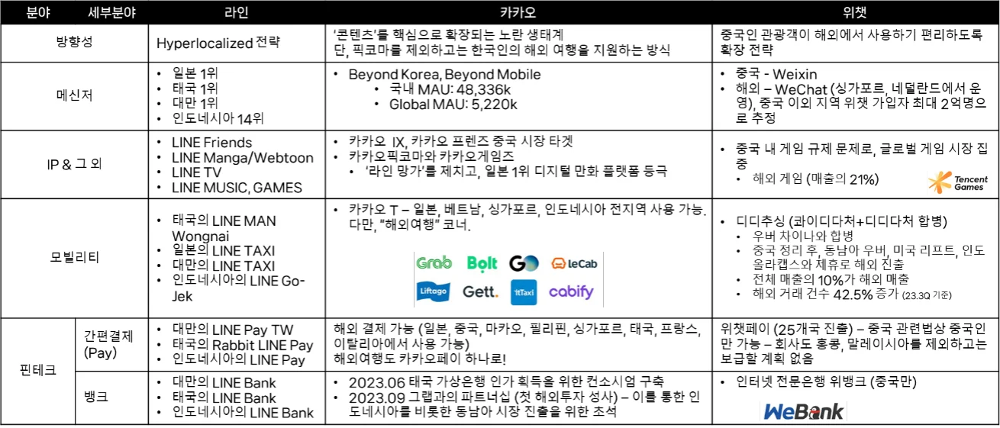
[그림25] LINE의 뉴욕 증시 상장
(출처: LINE 공식 홈페이지 및 뉴스)
사용자의 증가 주세는 감소하였지만, 매출은 증가하고 있어 성장성이 있다고 판단되었고, 라인의 입장에서도 상장을 통해 지명도와 신뢰성을 높이려는 의도가 컸다. 아시아 시장에서의 우위성을 지속 및 확보하고, 글로벌 진출을 적극적으로 추진하고자 하였다. 네이버 DART 금융감독원의 전자공시에 의하면, IPO를 통해 마련한 재원 중 30%에 가까운 3,900억원 가량은 ‘타법인 증권 취득자금’ 다시 말해 기업 인수를 위한 자금으로 설정해 놓아, 보다 공격적인 해외 시장 진출과 탑라인 제고를 위한 기업 인수를 고려한 것으로 볼 수 있었다.
3.4 Phase 3: 확장기
핀테크 사업으로 확장 라인은 내 손 안의 금융이라는 키워드로 유저들의 금융 서비스까지 장악하여 생태계를 확장하고 있다. 세계 곳곳의 라인 사용자와 협력사에 부가 가치를 전달하는데 주력하는 라인의 핀테크 서비스를 통한 성장이다. 핀테크란 기술을 이용하여 금융 시스템을 더욱 효율적으로 만드는 기업들로 이루어진 산업인데, 정보기술을 이용하여 금융 서비스, 더 나아가 금융 산업을 해체하고 금융 서비스를 네트워크 하는 것인데, 라인은 기술을 이용하여 금융 시스템을 사용자가 더 편리하게 사용할 수 있고, 라인이 가지고 있는 비금융데이터인 대안 정보를 활용하여 신용도를 측정하는 모델인 대안 신용평가 모형으로 고객 신용을 평가하기도 한다. 통신, 전자상거래, SNS 등 신용도와 연관성이 있는 온라인과 오프라인의 모든 데이터를 포함하고 있어, 정교하고 더 넓은 범위에서 사용될 수 있고, 금융 산업이 상대적으로 발전하지 않아 금융 거래 이력을 충분히 수집하여 활용할 수 없었던 국가에서도, 대안 시용평가 모형을 활용하여 고객의 신용도를 보다 정교하고 폭 넓게 평가 가능하게 되었다. 그로 인하여, 소셜 뱅킹이라는 메신저 연계형 모바일 뱅킹 플랫폼도 출시할 수 있게 되었다.
[그림 26] LINE의 핀테크 사업
(출처: LINE Factbook)
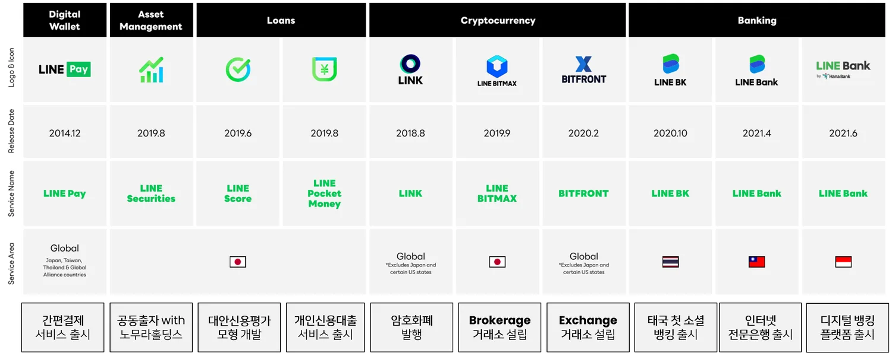
모바일 간편 결제 서비스인 LINE Pay와 인터넷 전문은행 LINE Bank를 통해 유저 중심의 서비스 이노베이션을 계속해서 이루어 나갔다. 일본, 대만과 태국에서 서비스를 제공 중이며, 간편결제의 경우, 대만에서는 1위, 태국에서는 2위 사업자로 성장 중에 있다. 일본은 PayPay와 합병으로 시너지를 모색 중에 있으며, 디지털 은행은 국민들의 은행 사용률이 낮은 동남아 국가를 중심으로 디지털 뱅킹으로 바로 leap frogging을 하고 있다.
[그림27] LINE Pay의 GMV 성장추세
(출처: LINE 공식 홈페이지 및 뉴스)
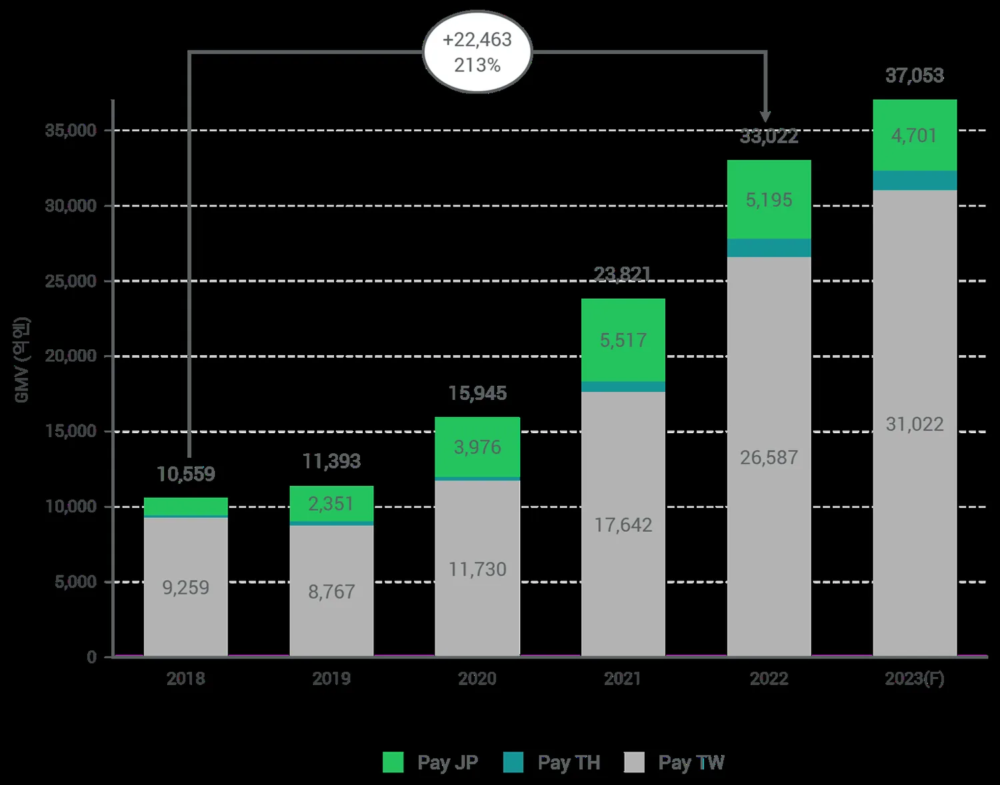
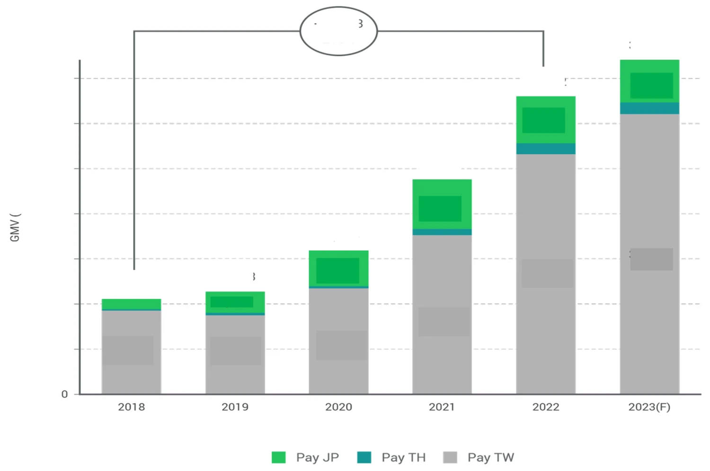
[그림28] 라인의 암호화폐 LINK
(출처: LINE Blockchain 사업현황과 계획 2023)
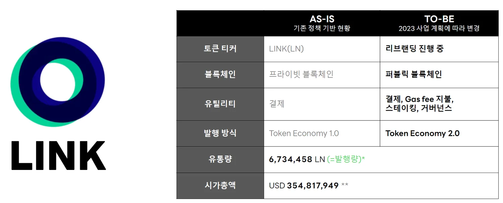
[그림29] 쉬운 LINK 거래 방법
(출처: LINE Blockchain 사업현황과 계획 2023)
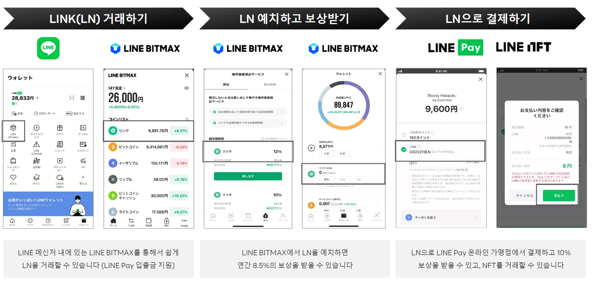
[그림30] LINK의 변경된 이름 Finschia
(출처: Finschia 공식 홈페이지)
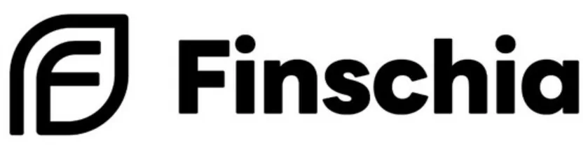
디지털 은행에 대해 구체적으로는 2021년 12월 기준 글로벌 사용자수 480만명, 2022년 3월 기준으로는 570만명을 달성하였고, 젊은 고객측에게 큰 호응을 얻으며, 금융 서비스 이용 방식 및 주 이용층에 있어 큰 변화를 일으키고 있다. 75%의 고객에 20세에서 39에서 연령층이고, 전통적 영업시간에 구애를 받지 않아, 사용자의 편리성을 증대하고 있다. 대만의 경우, 라인 앱에 연계되어 쉽고 간편한 금융 서비스를 제공하고 있다. 별도의 앱 설치 없이, 라인 메신저를 통해 친구 간 송금, 체크카드, 저축, 예금, 개인 할부 대출 등 다양한 금융 서비스가 이용이 가능하고, 출시 1년만에 대만 시중 체크카드 중 거래액과 거래량 모두 1위를 차지하고 잇다. 디지털 예금 계좌 수는 3분기 연속 업계에서 가장 빠른 속도로 성장하고 있다. 태국의 경우, 390만명의 사용자, 450만개의 은행 계좌 및 200만개의 체크카드를 달성하고 있고, 인도네시아의 경우, 라인의 테크 전문성과 하나은행의 축적된 금융 노하우를 결합하여, 편리한 디지털 뱅킹 서비스를 제공하며, 혁신금융으로 평가 받고 있어, 1년만에 가입자가 50만명을 넘어섰다.
또한, 라인을 넘어서, Blockchain 분야의 utility token인 암호화폐인 LINK 발행과 LINE Blockchain을 통한 Token Economy를 생성하였다. LINK와 Token Economy
Token Economy 2.0
- 발행 정책 - Finschia Protocol을 기반의 인플레이션에 기반한 자동 발행 - 발행 한도: 최대 10억개 - Inflation Rate: 초기 15% → 점진적 5% - 재단이 사전에 발행한 가상자산 물량을 보유하지 않는 Zero Reserve 정책 - 할당 및 분배 정책: 매 블록 생성 시점 마다 체인 프로토콜에 의해 할당 및 분배 - 기여 보상 정책 – 리워드(80%)
- 네트워크 기여 보상 (50%): 메인넷 운영과 성장에 기여한 대가로 보상 제공 체계로 링크를 노드에 예치하고 블록 생성과 검증에 참여한 검증인과 사용자들에게 지급. 링크가 상장된 거래소를 통해 노드 위임 예치에 참가해도 보상 받을 수 있음
- 서비스 기여 보상 (30%): 링크로 많이 결제하고 사용한만큼 보상을 받을 수 있는 시스템. 실질적인 기여 분에 대해서만 보상을 지급해 증명되지 않은 프로젝트에 과도한 grant(지원금) 지급되지 않도록 원천 차단하겠다는 취지 - On-chain data에 따라 결정되며, 재단이 개입하지 않음
- 서비스 기여자: 재단의 심사를 통과해 서비스 기여자로 등록되어야 함. 사용자들에게 양질의 서비스만을 제공받을 수 있도록 품질 관리 차원.
- 직접 기여: 링크를 통한 on-chain 결제 - 간접 기여: 이더리움, 네이버페이, 라인페이 등 그 외 결제 수단 사용 - 리저브 (20%) – 재단 전용 기능을 통해 관리됨 Finschia Mainnet 메인넷은 블록체인 기술을 통해 디지털 화폐 생성은 물론 다른 디앱(Decentralized App)을 탄생하게 하는 기반 네트워크이다. 블록체인의 핵심 인프라로 스마트폰의 운영체제와 비슷한 역할을 한다. 대표적인 메인넷으로는 Ethereum과 Bitcoin이 있고, 메인넷에서 작동하는 디앱은 스마트폰의 앱과 유사한 개념이다. Finschia의 차별성은 독자적으로 개발된 합의 알고리즘 Ostracon 적용으로 네트워크 안정성과 보안성을 개선하였다. Ostracon의 합의 메커니즘의 주요 사항은 아래와 같다.
LINE Blockchain의 Ostracon 합의 메커니즘 - 위임 지분증명 (Delegated Proof of Stake, DpoS)
- 프랙티컬 비잔틴 장애 결함 (Practical fault-tolerant, PBFT)
- Finschia 블록을 생성하고 검증하는 핵심 항목 중 하나 - VRF(Verifiable Random Function)이라는 보안 강화 기술 도입: 기존 Cosmos의 Tendermint-BFT 합의 구조의 안정성에 대한 우려 극복 – 온체인 상에서 무작위성을 제공하는 기술로 리더를 선정하는 과정에서 누구도 리더 예측할 수 없도록 설계 - 노드 수에 따른 공격 포인트와 가능성 예측하고 디도스 공격을 통해 시스템 마비 차단 + 가스피 및 스로틀링 활용 - WebAssembly CosmWarm 가상머신 적용 – 스마트컨트랙트 기능을 제공하더라도, 이더리움의 독자적인 개발 언어인 솔리디티가 아닌 다양한 일반 프로그래밍 언어로 각각의 PMF을 실현할 수 있도록 함. 타 블록체인간의 연동성을 감안한 ERC-20 및 ERC-721 호환 토큰 역시 손쉽게 구현 가능 - Ethereum 대비 속도가 400배 빠름 - 가스비 98% 절감 가능 Open Network 또한, Private Blockchain이 아니라 Public Blockchain으로 Open Network를 통해 유저에게 투명한 Blockchain 서비스를 제공하고자 한다.
[그림31] LINE Blockchain의 Open Network
(출처: LINE Blockchain 사업현황과 계획 2023)
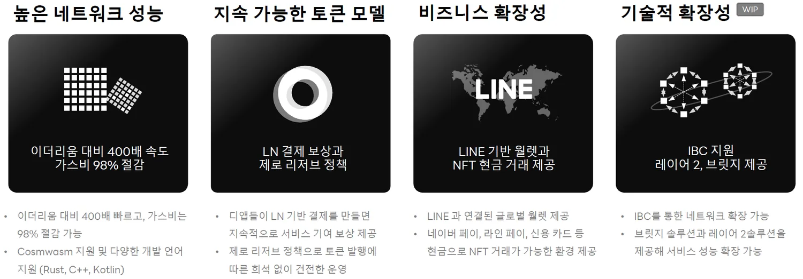
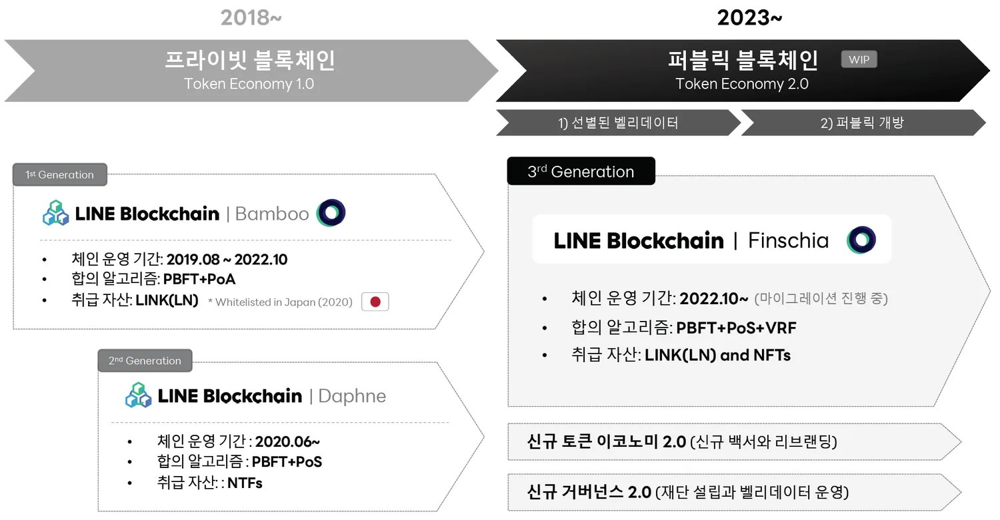
또한, NFT Marketplace인 DOSI와 LINE NFT 출시를 통해, 누구나 쉽게 NFT를 출품하고 거래할 수 있는 NFT 오픈 마켓 플랫폼과 글로벌 브랜드들의 스토어/커뮤니티 플랫폼으로 Blockchain의 NFT 시장에서도 성장 중에 있다.
[그림32] LINE의 NFT Marketplace DOSI
(출처: LINE Blockchain의 사업현황과 계획 2023)
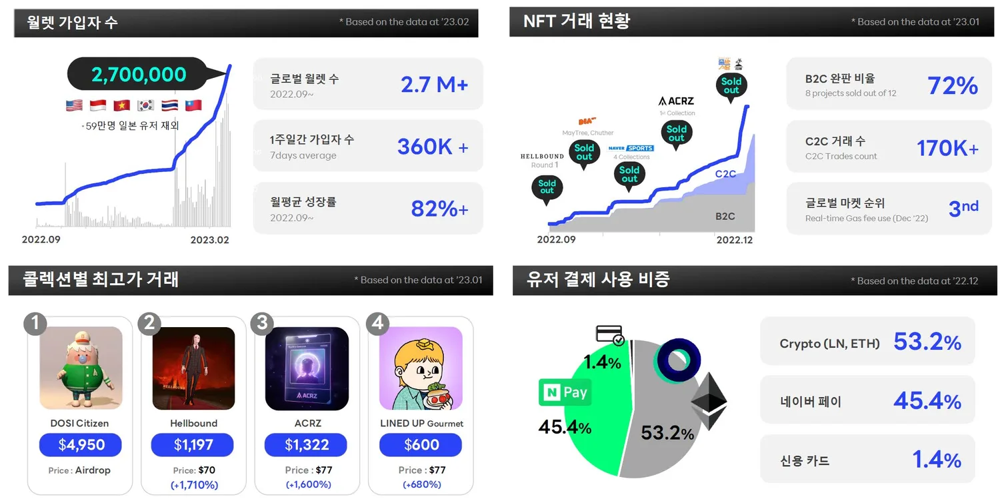
또한, 악순환의 네트워크 효과를 끊기 위해서, 무작정 많은 wallet user로 수치만 늘리는 것이 아니라, Abusing 유저에 대한 관리를 공지하고 함으로써 악순환의 고리를 끊고 있다. 그에 따라, Paid User가 7배 상승하는 긍정적인 결과도 얻었다.
[그림33] Finschia Platform
(출처: LINE Blockchain Developers 공식 홈페이지)
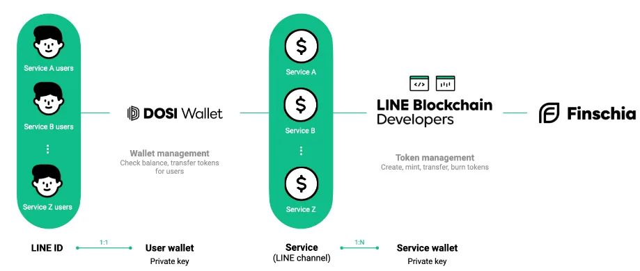
[그림34] 라인+야후: 네이버 연매출 3배의 거대 인터넷사업자 출범
(출처: 현대차증권 NAVER: Z와 N의 연결 고리)
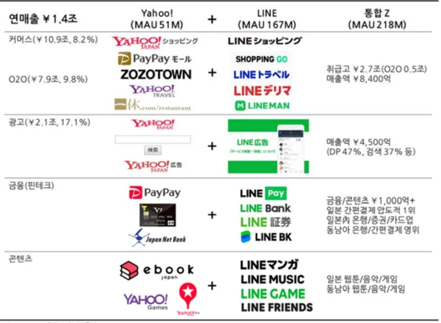
[그림35] 통합 Z Holdings 사업 영역
(출처: 현대차증권 NAVER: Z와 N의 연결 고리)
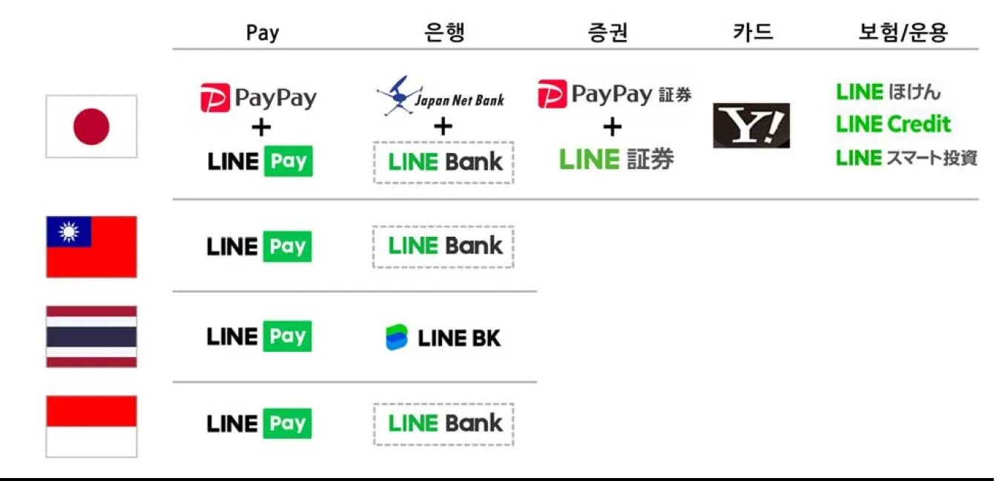
플랫폽 흡수 라인은 플랫폼 흡수인 야후와 경영통합을 통해 라인과 야후를 합치면 일본 인구의 100%를 커버하는 최초 플랫폼으로 거듭나고 있는 중이다. 합병의 시너지로 금융, 광고 위에 야후가 잘하는 커머스, 라인이 잘하는 콘텐츠가 보완재 역할을 하고자 한다. 구체적으로 간편결제의 경우 현금 없는 사회를 목표로 일본이 움직이고 있는데, 모바일 간편결제 서비스를 장악하기 위해 야후와 라인의 경쟁을 멈추고 서로 융합하고 있다.
2019년의 라인의 손실이 가장 큰 이유는 LINE Pay의 공격적인 마케팅과 시장 장악력을 확대하기 위한 Fee 절감 등이었는데, Yahoo Japan 입장에서도 PayPay를 Softbank와 같이 출자하여, 모바일 플랫폼으로 확장할 수 있는 기반을 만들고자 하였으나, 모바일 시장에서 독보적인 LINE Pay를 견제하기 위해 막대한 현금성 보상이 지급되어 Yahoo Japan의 손익에도 부정적인 모습을 보였다. 그렇기에, 두 법인의 경영통합으로 Pay, 은행, 카드 보험/운용 면에서 사업 통합 (연계 가맹점 공유) 및 ID 통합을 진행하는 것 자체만으로도 큰 시너지가 기대가 되고 있다.
제 4장. 한계 및 결론
라인은 요즘 수익성 낮은 서비스를 정리 중에 있다. 2022년 10월에는 음성인식 기반 AI 사업을 종료함으로써, 클로바 서비스를 종료하였고, 2023년 5월에는 통신사업을 종료하였다. 라인아웃 (VoIP) 서비스를 종료한 것인데, 이에 따른 라인 알뜰폰 서비스를 종료 및 라인 모바일을 축소하고 있다. 라인 메신저 내에서 제공되는 VoIP로 충분하다는 것이다. 애플의 아이팟이 아이폰으로 들어온 것 처럼, 별도의 앱 운용이 필요없다는 것이다.
또한, 최근의 IT 회사가 전개하는 인공지능 기술 확대도 적용 중에 있는데, 다만 방향성을 어떻게 가져가는지 아직 뚜렷하게 보이고 있지는 않다. 음성인식 서비스 자체에 한계가 있다고 판단하여, 5년만에 과감하게 서비스를 종료하였다. 다만, 그동안 클로바 운영 경험을 통해 얻은 데이터를 기반으로 기업용 AI (SaaS에 집중) 사업을 강화하고자 한다. 스마트 스피커에 탑재되는 음성인식 서비스인 클로바 어시스턴트의 서비스도 종료한다고 한다. 앞으로 한국어와 일본어로 AI를 고도화하여, 2023년 7월 AI ‘하이퍼클로바’를 업그레이드 한 ‘하이퍼클로바X’ 공개를 앞두고 라인과 기술협력을 네이버가 강화하고 있는데, 네이버가 한국어 기반이고, 라인은 일본어 기반으로 하이퍼클로바를 고도화 하고 있어, 해당 서비스가 라인, 네이버웍스 (라인웍스)와 야후재팬 eBook에 먼저 적용된다고 하는데, 이미 많이 벌어진 AI의 기술 격차를 줄일 수 있을지, AI를 융합한 서비스가 차별화되게 출시될 수 있을지가 앞으로의 관건으로 보인다.
최근 강조되고 있는 데이터의 효율성과 보안의 신뢰성도 라인이 앞으로 풀어가야 할 숙제이다. 데이터 양 증가에 따른, Data Governance도 중요해져 가고 있는데, 과연 축적된 Data가 Network 효과를 더 극대화하여, 라인과 야후 생태계에 기여할 수 있을지 여부가 관건이다. 라인의 데이터 플랫폼은 인포메이션 유니버스를 중심으로 거대 데이터를 효율적으로 축적하고 이용 가능하게끔 구축하고 있다. 데이터 업데이트 주기를 단축하고, 자동메타데이터 수입 등 자동화 중심 기능을 대폭 확대하고 데이터간 관계상 확인을 용이하게끔 만들었다. 데이터 생성 이후 현재까지 경로 및 경로 변경이 추적 가능한데, 라인 직원이 하나의 환경에서 분석 작업을 하기 위해 개발된 사내 데이터 플랫폼인 만큼, 개인 정보 형식의 데이터를 생성하지 않는 것이 중요하고, 차등 개인정보보호 기술을 통해 사용자 프라이버시 보호와 편리성을 향상시키고 있는데, 해당 데이터를 처리하는 효율성과 보안에 대한 신뢰성에 계속 유저의 실망을 저버리지 않을 수 있을지가 또 다른 중요한 사항으로 보인다.
Reference
Lieberman, M. B., & Montgomery, D. B. (1988). First-Mover Advantages. Strategic Management Journal, 9, 41–58. http://www.jstor.org/stable/2486211 Madureira, António; den Hartog, Frank; Bouwman, Harry; Baken, Nico (2013). "Empirical validation of Metcalfe's law: How Internet usage patterns have changed over time". Information Economics and Policy. 25 (4): 246–256. doi:10.1016/j.infoecopol.2013.07.002 Shapiro, C., Varian, H. R., & Carl, S. (1999). Information rules: A strategic guide to the network economy. Harvard Business Press. Kaplan, R. S., & Norton, D. P. (2003). Lock-in strategies: A new value proposition. Harvard Bus. Rev, 8(8). https://hbsp.harvard.edu/product/B0309A-PDF- ENG Eisenmann, T. R., Parket, G., & Alstyne, M.(2007년) Platform Envelopment. Working Paper 07-104. Harvard Business School. Eisenmann, T. R., Parket, G., & Alstyne, M.(2011년) Platform Envelopment. Strategic Management Journal, 32(12), 1270∼1285. Den Hertdog, Van der Aa & De Jong (2010). Capabilities for managing service innovation: towards a conceptual framework, Journal of Service Management Hagiu, A., & Wright, J. (2015). Multi-sided platforms. International Journal of Industrial Organization, 43, 162-174. Gawer, A. (2021). Digital platforms’ boundaries: The interplay of firm scope, platform sides, and digital interfaces. Long Range Planning, 54(5), 102045 김현용, 현대차증권 보고서, Megatrend Series #1. NAVER: Z와 N의 연결 고리, 2021년 10월 오동환, 삼성증권 보고서, Z 홀딩스: 조직 통합으로 시너지 모색 중, 2023.02.03 https://n.news.naver.com/mnews/article/117/0002122301 https://m.news.zum.com/articles/31162225 라인 상장: https://n.news.naver.com/mnews/article/421/0002170050 라인페이 출시: https://www.techinasia.com/line-pay-launches, https://linecorp.com/en/pr/news/en/2014/892 라인,야후 재팬 CTO “플랫폼, AI 기술, 보안 신뢰성이 핵심 과제”: https://www.etnews.com/20221117000260 Welcome to LINE, Japan’s everything app: https://restofworld.org/2023/bento-app-line/ 네이버 라인, AI 스피커 클로바 탑재 스마트 기기 판매 종료: https://www.theguru.co.kr/news/article.html?no=44231 네이버 라인, 日, AI스피커 사업 철수 SaaS에 집중: 52 https://post.naver.com/viewer/postView.naver?volumeNo=34695996&memberNo=2898 3946&vType=VERTICAL 통신 사업 접는 라인, 메신저 ‘전화 통화’ 서비스 오는 5월 31일 종료: https://www.ajunews.com/view/20230326161612651 Medium, Mass Adoption을 향한 첫 발걸음, Finschia Network, https://medium.com/lineblockchain/mass- adoption%EC%9D%84-%ED%96%A5%ED%95%9C-%EC%B2%AB-%EB%B0%9C %EA%B1%B8%EC%9D%8C-finschia-network-5ee25ce91f2 Medium, LINE Blockchain 사업 현황과 2023 계획(KR): https://medium.com/lineblockchain/line- blockchain-%EC%82%AC%EC%97%85-%ED%98%84%ED%99%A9%EA%B3%BC- 2023-%EA%B3%84%ED%9A%8D-kr-2ac74cade87e Singh, N., & Keating, B. M. (2018). Hyper-localizing e-commerce strategy: An emerging market perspective. Emerging Markets from a Multidisciplinary Perspective: Challenges, Opportunities and Research Agenda, 89-94. Uber rebrands with colorful new look developed in-house: https://www.designweek.co.uk/issues/1-7-february-2016/uber-rebrands-with-colourful- new-look-developed-in-house/ Becoming a “Third Pole” from Japan: Expansion of LINE’s Hyper-Localization Strategy in Asia, https://www.z-holdings.co.jp/en/strategy/13/ Abdullah, A. F., Zainal, A., Tahir, H. M., Othman, M. F. S., Azizi, A. K., & Nothamdani, N. A. H. B. (2020, December). Hyper-Localization Within Shopee Marketplace. In International Conference of Innovation in Media and Visual Design (IMDES 2020) (pp. 248-253). Atlantis Press. LY Corporation Business Results FY2023 Q2, November 7, 2023 LY News: https://www.lycorp.co.jp/en/news/ 20-F (https://www.sec.gov/edgar/browse/?CIK=1611820) 2016: https://www.sec.gov/Archives/edgar/data/1611820/000115752317000925/a51530935.ht m 2017: https://www.sec.gov/Archives/edgar/data/1611820/000119312518102738/d661717d20f. htm 2018: https://www.sec.gov/Archives/edgar/data/1611820/000119312519091931/d669530d20f. htm 2019: https://www.sec.gov/Archives/edgar/data/1611820/000119312520087676/d773604d20f. htm 2020 3Q: https://linecorp.com/en/ir/library/#